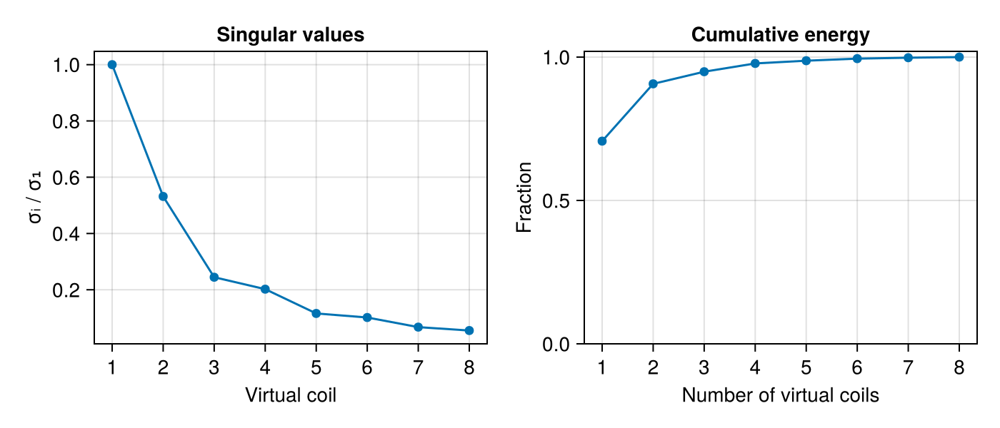
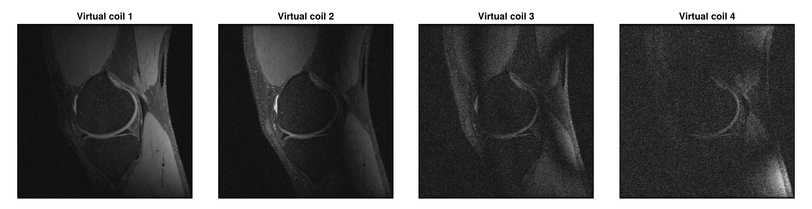
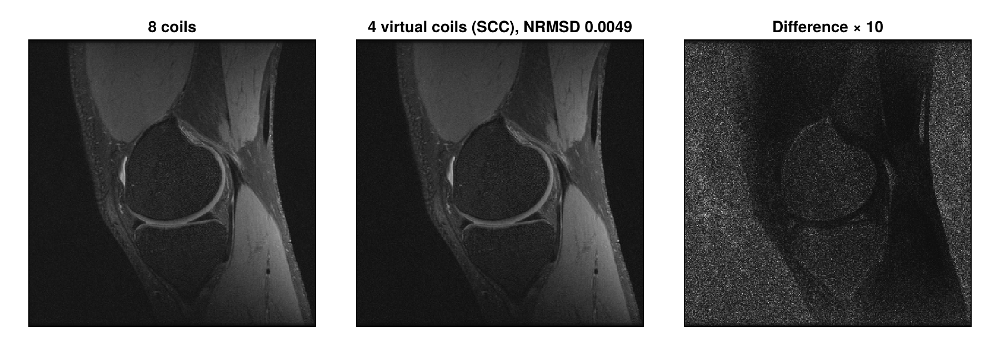
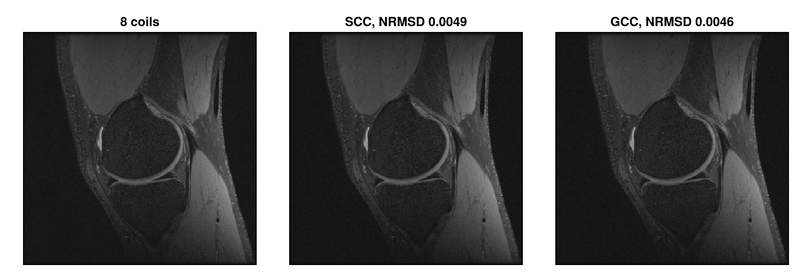
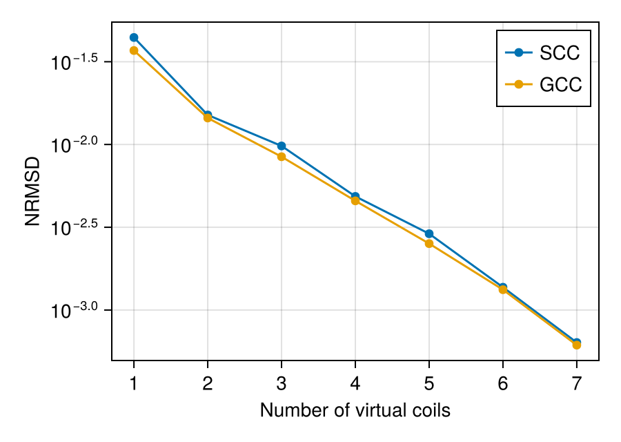
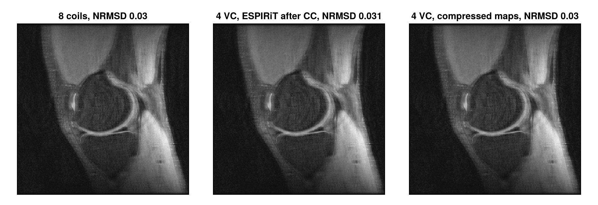
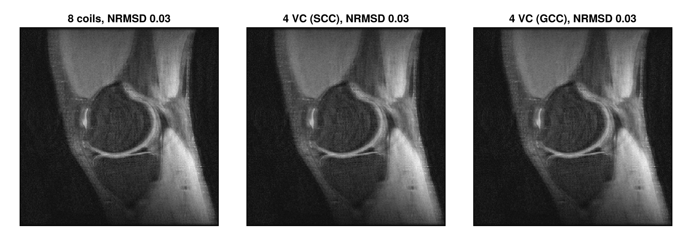

Compress Multi-Coil Data
Modern receive arrays have 16 to 64 coils. The memory and the reconstruction time grow with the number of coils, for iterative reconstructions roughly linearly. But the coils are not independent: neighboring coils see the object with similar sensitivities, so their signals are strongly correlated. Coil compression exploits this. It replaces the $N_c$ physical coils by $N_v < N_c$ virtual coils, which are linear combinations of the physical ones and carry most of the signal.
This guide explains how coil compression works and shows how to
- choose the number of virtual coils,
- compress the data with the two methods of MRICoilSensitivities,
softwareCoilCompressionandgeometricCoilCompression, - use the compressed data in a reconstruction with coil sensitivities.
We use the fully sampled knee data from Direct Reconstruction, a 2D Cartesian slice acquired with 8 coils. Eight coils is few, so the gain in reconstruction time is small here, but the principle is the same for larger arrays.
using MRIReco, MRIFiles, MRISampling, MRICoilSensitivities, CairoMakie
using LinearAlgebra: svdvals
function showimages(images, titles; columns = length(images))
fig = Figure(size = (300 * columns, 310 * cld(length(images), columns)))
for (i, (image, title)) in enumerate(zip(images, titles))
ax = Axis(fig[fldmod1(i, columns)...], title = title,
aspect = DataAspect(), yreversed = true)
heatmap!(ax, image', colormap = :grays)
hidedecorations!(ax)
end
return fig
endLoading the Data
As in the other tutorials, the reference is the direct reconstruction with the coil images combined by the root sum of squares:
using Pkg.Artifacts
artifacts = joinpath(pkgdir(MRIReco), "docs", "Artifacts.toml")
datadir = ensure_artifact_installed("MRIRecoDocsData", artifacts; io = devnull)
filename = joinpath(datadir, "knee_3dFSE_slice170.h5")
acqData = AcquisitionData(ISMRMRDFile(filename))
params = Dict{Symbol, Any}()
params[:reco] = "direct"
params[:reconSize] = (320, 320)
rootSumOfSquares(images) = sqrt.(sum(abs2, images, dims = 5))[:, :, 1, 1, 1, 1]
coilImages = reconstruction(acqData, params)
referenceImage = rootSumOfSquares(coilImages)
deviation(image) = round(nrmsd(referenceImage, image), sigdigits = 2)The k-space data of a contrast, slice and repetition is stored as a matrix with one column per coil:
kdata = acqData.kdata[1, 1, 1]
size(kdata)(102400, 8)How Coil Compression Works
Let $\mathbf{K}$ be this $N_s \times N_c$ matrix, with $N_s$ samples and $N_c$ coils. A virtual coil is a linear combination of the columns of $\mathbf{K}$. With a compression matrix $\mathbf{A}$ of size $N_c \times N_v$, the data of the $N_v$ virtual coils is
\[\mathbf{K}_v = \mathbf{K}\mathbf{A}.\]
The best choice of $\mathbf{A}$, in the sense that $\mathbf{K}_v$ keeps as much of the energy of $\mathbf{K}$ as possible, follows from the singular value decomposition $\mathbf{K} = \mathbf{U}\mathbf{\Sigma}\mathbf{V}^H$: $\mathbf{A}$ consists of the first $N_v$ columns of $\mathbf{V}$, the right singular vectors belonging to the largest singular values. The columns of $\mathbf{A}$ are orthonormal, so the compression is a rotation of the coils followed by discarding the weakest virtual coils.
The singular values $\sigma_i$ tell how much signal each virtual coil carries. Here, the first virtual coil already contains about 70 % of the energy $\sum_i \sigma_i^2$:
σ = svdvals(kdata)
energy = cumsum(σ .^ 2) ./ sum(σ .^ 2)
fig = Figure(size = (700, 300))
ax1 = Axis(fig[1, 1], xlabel = "Virtual coil", xticks = 1:8, ylabel = "σᵢ / σ₁", title = "Singular values")
scatterlines!(ax1, σ ./ σ[1])
ax2 = Axis(fig[1, 2], xlabel = "Number of virtual coils", xticks = 1:8, ylabel = "Fraction",
title = "Cumulative energy")
scatterlines!(ax2, energy)
ylims!(ax2, 0, 1.02)
fig
A common rule of thumb is to keep enough virtual coils to retain 95 to 99 % of the energy. For this data set, that means 4 to 6 of the 8 coils.
The compression matrix only depends on the correlation between the coils, not on the image. It can therefore be computed from a subset of the data, for example the first contrast or repetition, or the fully sampled calibration region, and applied to the rest. The keywords sContr and sRep select the contrast and repetition used for this calibration.
Software Coil Compression
softwareCoilCompression computes a single compression matrix for all the data, as described above (Huang et al., 2008). Applied to an AcquisitionData, it returns the compressed data and the compression matrices, one per slice:
numVC = 4
acqDataSCC, ccMatSCC = softwareCoilCompression(acqData, numVC)
size(acqDataSCC.kdata[1, 1, 1]), size(ccMatSCC[1])((102400, 4), (8, 4))The images of the virtual coils show how the signal is concentrated: the first virtual coil looks like a coil combined image, the following ones carry less and less signal.
coilImagesSCC = reconstruction(acqDataSCC, params)
showimages([abs.(coilImagesSCC[:, :, 1, 1, c, 1]) for c in 1:numVC],
["Virtual coil $c" for c in 1:numVC])
The root sum of squares of the virtual coil images is close to the reference. Because the compression matrix has orthonormal columns, keeping all 8 virtual coils would reproduce the reference exactly:
imageSCC = rootSumOfSquares(coilImagesSCC)
showimages([referenceImage, imageSCC, 10 .* abs.(referenceImage .- imageSCC)],
["8 coils", "$numVC virtual coils (SCC), NRMSD $(deviation(imageSCC))",
"Difference × 10"])
Geometric Coil Compression
The coil sensitivities vary in space, so the best combination of the coils is not the same everywhere. For Cartesian data, the readout direction is always fully sampled. geometricCoilCompression (Zhang et al.,
- uses this: it applies the inverse Fourier transform along the readout direction, computes one compression
matrix for each position $x$ along this direction, and transforms the compressed data back to k-space.
The SVD determines each matrix only up to a rotation of the virtual coils. Neighboring positions would then get virtual coils that do not match, which creates artifacts in the reconstructed images. The matrices are therefore aligned: starting from the center, each matrix is rotated to be as close as possible to its neighbor, so that the virtual coils vary smoothly along $x$.
The keyword dim selects the fully sampled direction (1 by default). The compression matrices are returned as an array of size $N_x \times N_c \times N_v$:
acqDataGCC, ccMatGCC = geometricCoilCompression(acqData, numVC)
size(ccMatGCC)(320, 8, 4)geometricCoilCompression requires Cartesian data in which dimension dim is fully sampled; otherwise it throws an ArgumentError. The other dimensions can be undersampled: the result keeps the sampling pattern of the input.
For the same number of virtual coils, geometric coil compression keeps slightly more of the signal:
imageGCC = rootSumOfSquares(reconstruction(acqDataGCC, params))
showimages([referenceImage, imageSCC, imageGCC],
["8 coils", "SCC, NRMSD $(deviation(imageSCC))", "GCC, NRMSD $(deviation(imageGCC))"])
The difference between the methods depends on the number of virtual coils:
numVCs = 1:7
deviationsSCC = [nrmsd(referenceImage, rootSumOfSquares(reconstruction(
first(softwareCoilCompression(acqData, n)), params))) for n in numVCs]
deviationsGCC = [nrmsd(referenceImage, rootSumOfSquares(reconstruction(
first(geometricCoilCompression(acqData, n)), params))) for n in numVCs]
fig = Figure(size = (450, 320))
ax = Axis(fig[1, 1], xlabel = "Number of virtual coils", xticks = numVCs, ylabel = "NRMSD", yscale = log10)
scatterlines!(ax, numVCs, deviationsSCC, label = "SCC")
scatterlines!(ax, numVCs, deviationsGCC, label = "GCC")
axislegend(ax)
fig
Compression and Coil Sensitivities
A SENSE reconstruction, as in Multi-Coil Reconstruction, needs one sensitivity map per coil. After compression, the data belong to virtual coils, so the sensitivities must be those of the virtual coils. We undersample the data as in that tutorial and reconstruct with all 8 coils for comparison:
acqDataSub = sample_kspace(acqData, 4.0, "poisson", calsize = 30)
sensitivities = espirit(acqDataSub, (6, 6), 30, eigThresh_2 = 0)
paramsSENSE = Dict{Symbol, Any}()
paramsSENSE[:reco] = "multiCoil"
paramsSENSE[:reconSize] = (320, 320)
paramsSENSE[:solver] = CGNR
paramsSENSE[:reg] = L2Regularization(1e-3)
paramsSENSE[:normalizeReg] = MeasurementBasedNormalization()
paramsSENSE[:iterations] = 10
paramsSENSE[:senseMaps] = sensitivities
imageSENSE = abs.(reconstruction(acqDataSub, paramsSENSE)[:, :, 1, 1, 1, 1])We compress the undersampled data with softwareCoilCompression. It only uses the measured samples, so it can be applied directly to undersampled data:
acqDataSubCC, ccMatSub = softwareCoilCompression(acqDataSub, numVC)There are two ways to obtain the sensitivities of the virtual coils.
Estimate them from the compressed data. This is the simplest option: the virtual coils are treated like physical ones.
sensitivitiesCC = espirit(acqDataSubCC, (6, 6), 30, eigThresh_2 = 0)
paramsSENSE[:senseMaps] = sensitivitiesCC
imageSENSE_CC = abs.(reconstruction(acqDataSubCC, paramsSENSE)[:, :, 1, 1, 1, 1])Compress existing sensitivities. The data of coil $c$ are the Fourier transform of $S_c\,x$. A virtual coil combines the data with the weights $A_{cv}$, so its sensitivity is the same combination of the coil sensitivities:
\[S_v(\mathbf{r}) = \sum_{c} S_c(\mathbf{r}) A_{cv}.\]
applyCoilCompressionSensitivityMaps computes this product along the coil dimension. It accepts the vector of matrices returned by softwareCoilCompression, one per slice:
sensitivitiesCC2 = applyCoilCompressionSensitivityMaps(sensitivities, ccMatSub)
paramsSENSE[:senseMaps] = sensitivitiesCC2
imageSENSE_CC2 = abs.(reconstruction(acqDataSubCC, paramsSENSE)[:, :, 1, 1, 1, 1])
showimages([imageSENSE, imageSENSE_CC, imageSENSE_CC2],
["8 coils, NRMSD $(deviation(imageSENSE))",
"$numVC VC, ESPIRiT after CC, NRMSD $(deviation(imageSENSE_CC))",
"$numVC VC, compressed maps, NRMSD $(deviation(imageSENSE_CC2))"])
With 4 instead of 8 coils, the reconstruction is barely worse, while each iteration only has to process half the data.
The same works for geometric coil compression. The profiles are missing along the second dimension, so the first dimension (the readout) is fully sampled and can be used with dim = 1. The compression matrix now depends on the position $x$ along this dimension, and the sensitivities are compressed row by row: $S_v(x, y) = \sum_c S_c(x, y) A_{cv}(x)$. No Fourier transform is needed, because the sensitivities are already in image space:
acqDataSubGCC, ccMatSubGCC = geometricCoilCompression(acqDataSub, numVC, dim = 1)
paramsSENSE[:senseMaps] = applyCoilCompressionSensitivityMaps(sensitivities, ccMatSubGCC, dim = 1)
imageSENSE_GCC = abs.(reconstruction(acqDataSubGCC, paramsSENSE)[:, :, 1, 1, 1, 1])
showimages([imageSENSE, imageSENSE_CC2, imageSENSE_GCC],
["8 coils, NRMSD $(deviation(imageSENSE))",
"$numVC VC (SCC), NRMSD $(deviation(imageSENSE_CC2))",
"$numVC VC (GCC), NRMSD $(deviation(imageSENSE_GCC))"])
The same matrices can be applied to other data with applyCoilCompression, for example to another AcquisitionData measured with the same coils, or to the k-space returned by kDataCart:
kspaceCC = applyCoilCompression(kDataCart(acqDataSub), ccMatSub)
size(kspaceCC)(320, 320, 1, 4, 1, 1)Summary
- Look at the singular values to choose the number of virtual coils.
softwareCoilCompressionworks for any trajectory and for undersampled data.geometricCoilCompressionis restricted to Cartesian data with a fully sampled direction, usually the readout, and keeps a bit more signal for the same number of virtual coils.- For SENSE reconstructions, either estimate the sensitivities from the compressed data, or compress the existing sensitivities with the same matrix as the data (
applyCoilCompressionSensitivityMaps).
References
- Huang F, Vijayakumar S, Li Y, Hertel S, Duensing GR. A software channel compression technique for faster reconstruction with many channels. Magnetic Resonance Imaging 2008;26:133–141. doi:10.1016/j.mri.2007.04.010
- Zhang T, Pauly JM, Vasanawala SS, Lustig M. Coil compression for accelerated imaging with Cartesian sampling. Magnetic Resonance in Medicine 2013;69:571–582. doi:10.1002/mrm.24267
This page was generated using Literate.jl.